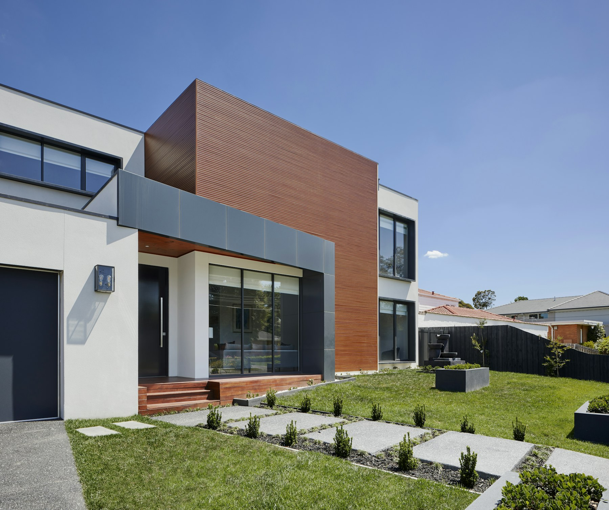
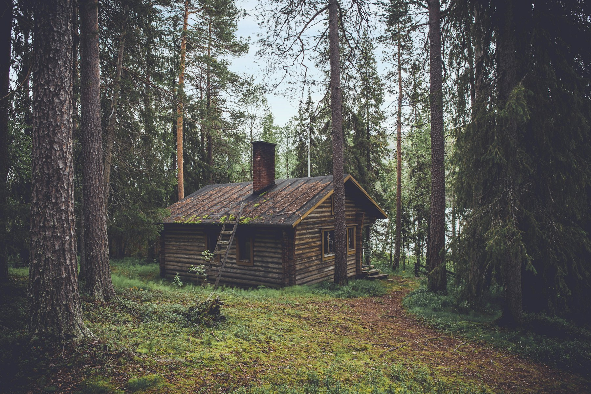

Explorar modelo ›
Explorar modelo ›SITES E GESTÃO PARA HOSPEDAGENS
Seu lugar merece
um site à altura.
Escolha um modelo, conte a história da sua pousada e experimente uma presença digital com a sua identidade. A Bia acompanha cada escolha.
10 modelos autoraisTeste antes de contratar


UM NOVO CAPÍTULOO encanto começa
antes do check-in.
FEITO PARAantes do check-in.
acolher
E CONECTAR
IDENTIDADE PRÓPRIARESERVAS DIRETASATENDIMENTO CONSULTIVOROTINA MAIS ORGANIZADA
CADA HOSPEDAGEM TEM UMA HISTÓRIA
Uma vitrine para
o seu jeito de receber.
Não comece por uma página em branco. Explore composições pensadas para diferentes destinos, personalize com seus dados e sinta o resultado.


BELEZA NA FRENTE. CLAREZA NA GESTÃO.
Mais presença.
Mais autonomia.
Um site para apresentar sua hospedagem e facilitar pedidos diretos. Um PMS para organizar a operação. A Bia para orientar escolhas e ajudar o visitante a avançar.
- Site com a identidade da pousada
- Canal para solicitações de reserva direta
- Planos de gestão e atendimento
DO PRIMEIRO OLHAR À ESCOLHA
Você testa. Você decide.
Encontre o estilo
Escolha o modelo que tem a alma da sua hospedagem.
Conte sua história
Nome, fotos, acomodações e os detalhes que importam.
Experimente
Navegue pela prévia e teste a solicitação de reserva.
Prepare a proposta
Quando decidir, a OUTS recebe seu pedido organizado.
UM NOVO COMEÇO PARA A SUA POUSADA